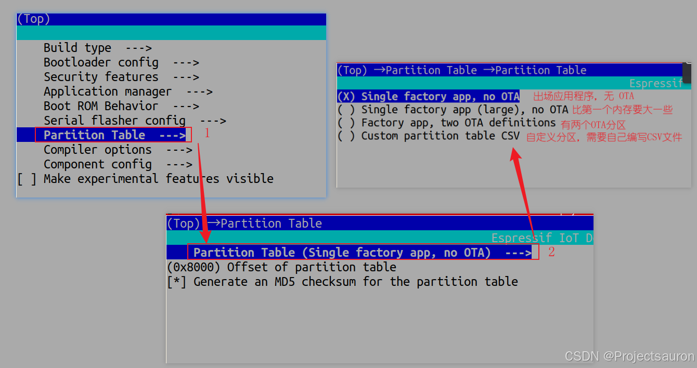
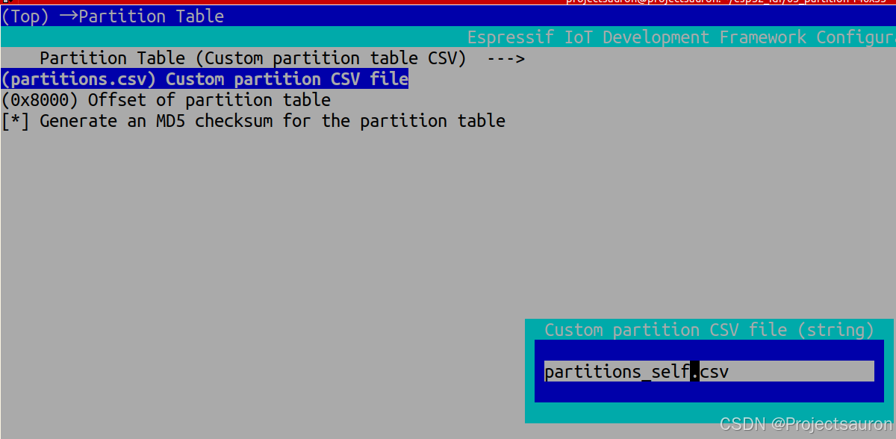
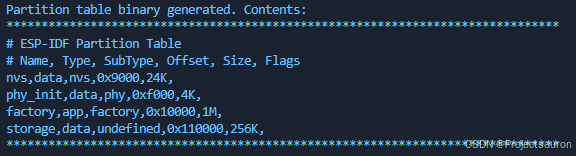
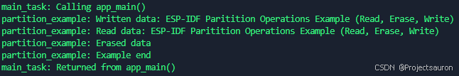
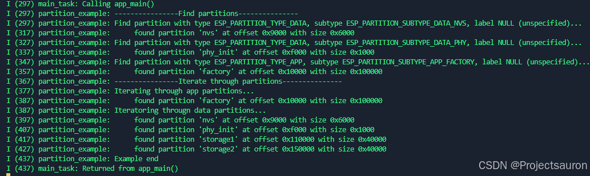

ESP32-IDF 分区表
[toc]
一、基本介绍
使用时要添加头文件 #include "esp_partition.h"。
1、配置结构体
1.1 esp_partition_t
1 | typedef struct { |
该结构体存储的是分区信息，使用的是 API 的格式，而不是 Flash 中的格式，该格式是 esp_partition_info_t。
flash_chip：分区所在的 SPI 闪存芯片type：分区类型 （app/data）subtype：partition subtype partition 子类型address：Flash 中分区的起始地址size：分区的大小（以字节为单位）erase_size：擦除操作所应对齐的大小label：分区标签，以零结尾的 ASCII 字符串encrypted：如果分区已加密，则 flag 设置为 truereadonly：如果 partition 是只读的，则 flag 设置为 true
1.2 esp_partition_iterator_t
用于遍历分区表的迭代器：
1 | typedef struct esp_partition_iterator_opaque_* esp_partition_iterator_t; |
-
2、常用 API
2.1 esp_partition_find
1 | esp_partition_iterator_t esp_partition_find(esp_partition_type_t type, esp_partition_subtype_t subtype, const char *label) |
- 参数
type：分区类型，参考esp_partition_type_tsubtype：分区子类型，参考esp_partition_subtype_tlabel：可选）分区标签。如果查找具有特定名称的分区，请设置此值。否则传递 NULL。
- 作用
- 根据一个或多个参数查找分区。
- 返回值
esp_partition_iterator_t：可用于枚举找到的所有分区的迭代器；如果未找到分区，则为 NULL。通过此函数获取的 Iterator 在不再使用时必须使用esp_partition_iterator_release释放。
2.2 esp_partition_find_first
1 | const esp_partition_t *esp_partition_find_first(esp_partition_type_t type, esp_partition_subtype_t subtype, const char *label) |
- 参数
type：分区类型，参考esp_partition_type_tsubtype：分区子类型，参考esp_partition_subtype_tlabel：可选）分区标签。如果查找具有特定名称的分区，请设置此值。否则传递 NULL。
- 作用
- 根据一个或多个参数查找第一个分区。
- 返回值
esp_partition_iterator_t：指向esp_partition_t结构的指针，如果未找到分区，则为 NULL。此指针在应用程序的生存期内有效。
2.3 esp_partition_get
1 | const esp_partition_t *esp_partition_get(esp_partition_iterator_t iterator) |
- 参数
iterator：通过esp_partition_find获取的迭代器。必须为非 NULL。
- 作用
- 获取给定分区
esp_partition_t结构。
- 获取给定分区
- 返回值
esp_partition_t：指向 esp_partition_t 结构的指针。此指针在应用程序的生存期内有效。
2.4 esp_partition_next
1 | esp_partition_iterator_t esp_partition_next(esp_partition_iterator_t iterator) |
- 参数
iterator：通过esp_partition_find获取的迭代器。必须为非 NULL。
- 作用
- 将 partition iterator 移动到找到的下一个分区。
- 返回值
esp_partition_t：如果未找到分区，则为 NULL，否则为有效的esp_partition_iterator_t。
2.5 esp_partition_iterator_release
1 | void esp_partition_iterator_release(esp_partition_iterator_t iterator) |
- 参数
iterator：使用 esp_partition_find 获取的迭代器。迭代器允许为 NULL，因此在调用此函数之前无需检查其值。
- 作用
- 释放 partition 迭代器。
2.6 esp_partition_verify
1 | const esp_partition_t *esp_partition_verify(const esp_partition_t *partition) |
- 参数
partition：指向要验证的分区数据的指针。必须为非 NULL。此结构的所有字段必须与 flash 中的分区表条目匹配，此函数才能返回成功匹配。
- 作用
- 验证分区数据。
- 返回值
- 如果未找到分区，则返回 NULL。
- 如果找到，则返回指向 flash 中
esp_partition_t结构的指针。此指针在应用程序的生存期内始终有效。
2.7 esp_partition_read
1 | esp_err_t esp_partition_read(const esp_partition_t *partition, size_t src_offset, void *dst, size_t size) |
- 参数
partition：指向使用esp_partition_find_first或esp_partition_get获取的分区结构的指针。必须为非 NULL。src_offset：要读取的数据的地址，相对于分区的开头。dst：向应存储数据的缓冲区的指针。指针必须为非 NULL，并且缓冲区必须至少为 ‘size’ 字节长。size：要读取的数据的大小，以字节为单位。
- 作用
- 从分区中读取数据。
- 返回值
ESP_OK，如果数据读取成功ESP_ERR_INVALID_ARG：参数错误，比如src_offset超过分区大小ESP_ERR_INVALID_SIZE：如果读取将超出分区的边界
2.8 esp_partition_write
1 | esp_err_t esp_partition_write(const esp_partition_t *partition, size_t dst_offset, const void *src, size_t size) |
- 参数
partition：指向使用esp_partition_find_first或esp_partition_get获取的分区结构的指针。必须为非 NULL。dst_offset：相对于分区开头应写入数据的地址。src：指向源缓冲区的指针。指针必须为非 NULL，并且缓冲区必须至少为 ‘size’ 字节长。size：要写入的数据的大小，以字节为单位。
- 作用
- 从将数据写入分区。
- 返回值
ESP_OK，如果数据读取成功ESP_ERR_INVALID_ARG：参数错误，比如dst_offset超过分区大小ESP_ERR_INVALID_SIZE：如果 write 会超出分区的边界ESP_ERR_NOT_ALLOWED：如果分区是只读的
在将数据写入 flash 之前，需要擦除 flash 的相应区域。这可以使用
esp_partition_erase_range函数来完成。
2.9 esp_partition_erase_range
1 | esp_err_t esp_partition_erase_range(const esp_partition_t *partition, size_t offset, size_t size) |
- 参数
partition：指向使用esp_partition_find_first或esp_partition_get获取的分区结构的指针。必须为非 NULL。offset：从擦除操作应开始的分区开头开始的偏移量。必须与partition->erase_size对齐。size：应擦除的范围大小，以字节为单位。必须能被partition->erase_size整除。
- 作用
- 擦除分区的一部分。
- 返回值
ESP_OK，如果数据读取成功ESP_ERR_INVALID_ARG：参数错误，比如 iterator 或 dst 为 NULLESP_ERR_INVALID_SIZE：如果 erase 会超出分区的边界ESP_ERR_NOT_ALLOWED：如果分区是只读的
2.10 esp_partition_get_main_flash_sector_size
1 | uint32_t esp_partition_get_main_flash_sector_size(void) |
- 参数
partition：指向使用esp_partition_find_first或esp_partition_get获取的分区结构的指针。必须为非 NULL。offset：从擦除操作应开始的分区开头开始的偏移量。必须与partition->erase_size对齐。size：应擦除的范围大小，以字节为单位。必须能被partition->erase_size整除。
- 作用
- 获取主闪存扇区大小。
- 返回值
SPI_FLASH_SEC_SIZE：用于 esp32xx 目标ESP_PARTITION_EMULATED_SECTOR_SIZE：对于 Linux 目标
2.11 esp_partition_copy
1 | esp_err_t esp_partition_copy(const esp_partition_t *dest_part, uint32_t dest_offset, const esp_partition_t *src_part, uint32_t src_offset, size_t size) |
- 参数
dest_part：指向目标分区的指针。dest_offset：应写入数据的目标分区中的偏移量 （必须与SPI_FLASH_SEC_SIZE = 0x1000对齐）。src_part：指向源分区的指针（必须位于内部 Flash 上）。src_offset：应从中读取数据的源分区中的偏移量。size：要从源分区复制到目标分区的字节数。如果size == SIZE_MAX，则该函数将从src_offset复制到源分区的末尾，并擦除整个目标分区（从dest_offset开始）。
- 作用
- 将数据从特定偏移量的源分区复制到特定偏移量的目标分区。
- 返回值
SPI_FLASH_SEC_SIZE：用于 esp32xx 目标
目标偏移量必须与 Flash 扇区大小 （
SPI_FLASH_SEC_SIZE = 0x1000） 对齐。如果size == SIZE_MAX，则整个目标分区（从dest_offset开始）将被擦除，并且该函数会将从src_offset开始的所有源分区复制到目标分区。该函数确保在扇区边界上擦除目标分区（擦除大小SPI_FLASH_SEC_SIZE对齐）。
3、枚举类型
3.1 esp_partition_type_t
分区表类型 Type，具体见第二节介绍：
1 | typedef enum { |
3.2 esp_partition_subtype_t
分区表子类型 SubType，具体见第二节介绍：
1 | typedef enum { |
二、ESP32 Partition
1、概述
每片 ESP32-C3 的 flash 可以包含多个应用程序，以及多种不同类型的数据（例如校准数据、文件系统数据、参数存储数据等）。因此，我们在 flash 的 默认偏移地址 0x8000 处烧写一张分区表。
分区表的长度为 0xC00 字节，最多可以保存 95 条分区表条目。MD5 校验和附加在分区表之后，用于在运行时验证分区表的完整性。分区表占据了整个 flash 扇区，大小为 0x1000 (4 KB)。因此，它后面的任何分区至少需要位于 (默认偏移地址) + 0x1000 处。
分区表中的每个条目都包括以下几个部分：Name（标签）、Type（app、data 等）、SubType 以及在 flash 中的偏移量（分区的加载地址）。
在使用分区表时，最简单的方法就是打开项目配置菜单（使用命令 idf.py menuconfig），并在 CONFIG_PARTITION_TABLE_TYPE 下选择一个预定义的分区表：
1 | "Single factory app, no OTA" |

在以上三种选项(自定义分区后面会讲)中，出厂应用程序均将被烧录至 flash 的 0x10000 偏移地址处。这时，运行 idf.py partition-table，即可以打印当前使用分区表的信息摘要。
2、分区表格式
2.1 partition_table
我们先讲一下分区表的组成：
1 | # Name, Type, SubType, Offset, Size, Flags |
一共有五个字段，下面分别来看一下。
2.1.1 Name
Name 字段可以是任何有意义的名称，但==不能超过 16 个字节==，其中包括一个空字节（之后的内容将被截断）。该字段对 ESP32-C3 并不是特别重要。
2.1.2 Type
Type 字段可以指定为 app (0x00) 或者 data (0x01)，也可以直接使用数字 0-254（或者十六进制 0x00-0xFE）。
注意，0x00-0x3F 不得使用（预留给 esp-idf 的核心功能）。
如果你的应用程序需要以 ESP-IDF 尚未支持的格式存储数据，请在 0x40-0xFE 内添加一个自定义分区类型。
这里可以参考一下 esp_partition_type_t（见第一节）关于 app 和 data 分区的枚举定义。
注意，启动加载器将忽略
app(0x00) 和data(0x01) 以外的其他分区类型。
2.1.3 SubType
SubType 字段长度为 8 bit，内容与具体分区 Type 有关，也可以看作 Type 的具体分类。目前，esp-idf 仅仅规定了 app 和 data 两种分区类型的子类型含义。
可以参考 esp_partition_subtype_t，以了解 ESP-IDF 定义的全部子类型列表，包括：
- 当
Type定义为 app 时，SubType字段可以指定为factory(0x00)、ota_0(0x10) ~ota_15(0x1F) 或者test(0x20)。factory(0x00) 是==默认==的 app 分区。启动加载器将默认加载该应用程序。但如果存在类型为 data/ota 分区，则启动加载器将加载 data/ota 分区中的数据，进而判断启动哪个 OTA 镜像文件。- OTA 升级永远都不会更新 factory 分区中的内容。
- 如果你希望在 OTA 项目中预留更多 flash，可以删除 factory 分区，转而使用 ota_0 分区。
ota_0(0x10) ~ota_15(0x1F) 为 OTA 应用程序分区，启动加载器将根据 OTA 数据分区中的数据来决定加载哪个 OTA 应用程序分区中的程序。在使用 OTA 功能时，应用程序应==至少拥有 2 个== OTA 应用程序分区（ota_0和ota_1）。test(0x20) 为预留的子类型，用于工厂测试流程。如果没有其他有效 app 分区，test 将作为备选启动分区使用。也可以配置启动加载器在每次启动时读取 GPIO，如果 GPIO 被拉低则启动该分区。
- 当
Type定义为data时，SubType字段可以指定为ota(0x00)、phy(0x01)、nvs(0x02)、nvs_keys(0x04) 或者其他组件特定的子类型（请参考 子类型枚举).ota(0) 即 OTA 数据分区 ，用于存储当前所选的 OTA 应用程序的信息。这个分区的大小需要设定为 0x2000。phy(1) 分区用于存放 PHY 初始化数据，从而保证可以为每个设备单独配置 PHY，而非必须采用固件中的统一 PHY 初始化数据。- 默认配置下，phy 分区并不启用，而是直接将 phy 初始化数据编译至应用程序中，从而节省分区表空间（直接将此分区删掉）。
- 如果需要从此分区加载 phy 初始化数据，则打开项目配置菜单（
idf.py menuconfig），并且使能CONFIG_ESP_PHY_INIT_DATA_IN_PARTITION选项。此时，还需要手动将 phy 初始化数据烧至设备 flash（esp-idf 编译系统并==不会自动==完成该操作）。
nvs(2) 是专门给 非易失性存储 (NVS) API 使用的分区。- 用于存储每台设备的 PHY 校准数据（注意，并不是 PHY 初始化数据）。
- 用于存储 Wi-Fi 数据（如果使用了
esp_wifi_set_storage(WIFI_STORAGE_FLASH) 初始化函数）。 - NVS API 还可以用于其他应用程序数据。强烈建议为 NVS 分区分配至少 $0x3000$ 字节空间。
- 如果使用 NVS API 存储大量数据，请增加 NVS 分区的大小（默认是 $0x6000$ 字节）。
nvs_keys(4) 是 NVS 秘钥分区。- 用于存储加密密钥（如果启用了 NVS 加密 功能）。
- 此分区应至少设定为 4096 字节。
NVS 的内容下一篇文章会讲到
ESP-IDF 还支持其他用于数据存储的预定义子类型，包括：
coredump(0x03) 用于在使用自定义分区表 CSV 文件时存储核心转储。efuse(0x05) 使用 虚拟 eFuse 模拟 eFuse 位。undefined(0x06) 隐式用于未指定子类型（即子类型为空）的数据分区，但也可显式将其标记为未定义。fat(0x81) 用于 FAT 文件系统。spiffs(0x82) 用于 SPIFFS 文件系统。littlefs(0x83) 用于 LittleFS 文件系统。
如果分区类型是由应用程序定义的任意值 (0x40-0xFE)，那么 subtype 字段可以是由应用程序选择的任何值 (0x00-0xFE)。
额外 SubType 字段
组件可以通过设置 EXTRA_PARTITION_SUBTYPES 属性来定义额外的分区子类型。 EXTRA_PARTITION_SUBTYPES 是一个 CMake 列表，其中的每个条目由字符串组成，以逗号为分隔，格式为 <type>、<subtype>、<value>。构建系统通过该属性会自动添加额外的子类型，并在 esp_partition_subtype_t 中插入名为 ESP_PARTITION_SUBTYPE_<type>_<subtype> 的字段。项目可以使用这个子类型来定义分区表 CSV 文件中的分区，并使用 esp_partition_subtype_t 中的新字段。
2.1.4 Offset 和 Size
偏移地址表示 SPI flash 中的分区地址，扇区大小为 0x1000 (4 KB)。因此，==偏移地址必须是 4 KB 的倍数==。
若 CSV 文件中的分区偏移地址为空，则该分区会接在前一个分区之后；若为首个分区，则将接在分区表之后。
app 分区的偏移地址必须与 0x10000 (64 KB) 对齐。如果偏移字段留空，则
gen_esp32part.py工具会==自动计算==得到一个满足对齐要求的偏移地址。如果 app 分区的偏移地址没有与 0x10000 (64 KB) 对齐，则该工具会报错。(所以大部分情况下 Offset 字段都是留空)app 分区的大小必须==与 flash 扇区大小对齐==。为 app 分区指定未对齐的大小将返回错误。
app 分区的大小和偏移地址可以采用十进制数或是以 0x 为前缀的十六进制数，且支持 K 或 M 的倍数单位（K 和 M 分别代表 1024 和 1024*1024 字节）。
如果你希望允许分区表中的分区采用任意起始偏移量 (
CONFIG_PARTITION_TABLE_OFFSET)，请将分区表（CSV 文件）中所有分区的偏移字段都留空。注意，此时，如果你更改了分区表中任意分区的偏移地址，则其他分区的偏移地址也会跟着改变。这种情况下，如果你之前还曾设定某个分区采用固定偏移地址，则可能造成分区表冲突，从而导致报错。
2.1.5 Flags
目前支持 encrypted 和 readonly 标记：
- 如果 Flags 字段设置为
encrypted，且已启用 flash 加密 功能，则该分区将会被加密。 - 如果 Flags 字段设置为
readonly，则该分区为只读分区。readonly标记仅支持除ota和coredump子类型外的 data 分区。使用该标记，防止意外写入如出厂数据分区等包含关键设备特定配置数据的分区。
- 无论是否设置 Flags 字段，app 分区都将保持加密。
- 可以使用冒号连接不同的标记，来同时指定多个标记，如
encrypted:readonly。
2.2 内置分区表
结果刚才的介绍，下面来看一下官方提供的分区表文件：
下程序取自：esp-idf/components/partition_table/partitions_singleapp.csv，也就是上面提到的选项 "Single factory app, no OTA"：
1 | # Name, Type, SubType, Offset, Size, Flags |
- flash 的 0x10000 (64 KB) 偏移地址处存放一个标记为 “factory” 的二进制应用程序，且启动加载器将默认加载这个应用程序。
- 分区表中还定义了两个数据区域，分别用于存储 NVS 库专用分区和 PHY 初始化数据。
下面是带两个 OTA 分区的，esp-idf/components/partition_table/partitions_two_ota.csv：
1 | # Name, Type, SubType, Offset, Size, Flags |
- 分区表中定义了三个应用程序分区，这三个分区的类型都被设置为 “app”，但具体 app 类型不同。其中，位于 0x10000 偏移地址处的为出厂应用程序 (factory)，其余两个为 OTA 应用程序（ota_0，ota_1）。
- 新增了一个名为 “otadata” 的数据分区，用于保存 OTA 升级时需要的数据。启动加载器会查询该分区的数据，以判断该从哪个 OTA 应用程序分区加载程序。如果 “otadata” 分区为空，则会执行出厂程序。
2.3 生成二进制分区表
烧写到 ESP32-C3 中的分区表采用二进制的 bin 文件，而不是 CSV 文件本身。此时，esp-idf/components/partition_table/gen_esp32part.py 工具可以实现 CSV 和 bin 之间的转换。
如果你在项目配置菜单（idf.py menuconfig）中设置了分区表 CSV 文件的名称，然后构建项目或执行 idf.py partition-table。这时，==转换将在编译过程中自动完成==。
当我们选择了自定义分区表文件后，这里就会新出现一个选项，让我们填写自定义的分区表文件的名称。

注意，这个分区表文件必须在你的项目的顶层目录下，名称也必须对应，否则会找不到。例如：

1 | 手动将 CSV 文件转换为二进制文件 |
2.4 MD5 校验和
bin 格式的分区表中含有一个 MD5 校验和。这个 MD5 校验和是根据分区表内容计算的，可在设备启动阶段，用于验证分区表的完整性。
用户可通过 gen_esp32part.py 的 --disable-md5sum 选项或者 CONFIG_PARTITION_TABLE_MD5 选项关闭 MD5 校验。
2.5 烧写分区表
idf.py partition-table-flash：使用esptool.py工具烧写分区表。idf.py flash：会烧写所有内容，包括分区表。
在执行
idf.py partition-table命令时，手动烧写分区表的命令也将打印在终端上。
==分区表的更新并不会擦除根据旧分区表存储的数据==。此时，可以使用 idf.py erase-flash 命令或者 esptool.py erase_flash 命令来擦除 flash 中的所有内容。
三、实例操作
1、例一——基本读写流程
本例简单演示了如何对特定分区 storage 进行写入和读取，需要注意的是，在将数据写入 flash 之前，必须向用 esp_partition_erase_range 函数擦除 flash 的相应区域。
1 | void app_main(void) |
分区表文件如下：
1 | # Name, Type, SubType, Offset, Size, Flags |
前面说了，只要在 menuconfig 里设置了自定义分区表，那么烧录的时候会自动将分区表烧录进去：

结果如下：

2、例二——遍历操作
本例中主要演示了迭代器 iterator 是怎么使用的，一定要记住，使用完迭代器后一定要释放：
1 | // Get the string name of type enum values used in this example |
分区表如下：
1 | # Name, Type, SubType, Offset, Size, Flags |
结果如下：
